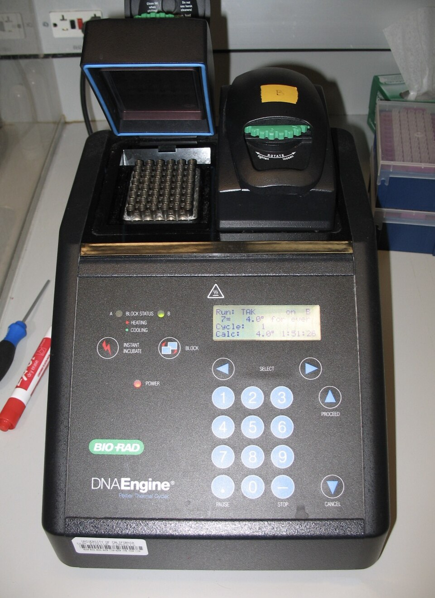
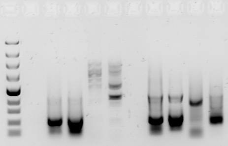

先抓住 8 个核心
考试题基本都在这 8 个位置换说法。
把一段目标 DNA 在体外大量复制出来。
模板、两条引物、dNTP、耐热 DNA 聚合酶、Mg2+、缓冲液。
变性打开双链，退火贴引物，延伸合成新链。
决定扩哪一段，也决定特异性。
耐高温，从引物 3' 端按 5'→3' 合成。
不剪 DNA；第 3 轮开始稳定出现固定长度产物。
目标带看大小，杂带看特异性，弱带看产量。
阴性对照查污染，阳性对照查体系是否能工作。
先用三张图建立直觉
仪器负责温度循环，教材图负责机制，胶图负责结果判读。


循环机制
三步循环，不是随便复制
PCR 每轮都在重复：打开模板、让引物贴到目标两端、让聚合酶延伸。引物贴在哪里，PCR 的边界就在哪里。
PCR 可以理解成“用两条引物给 DNA 片段画边界”。模板 DNA 只是被读取的原件，引物决定从哪里开始复制，dNTP 是原料，Taq 酶负责把原料接到新链上。
考试问“为什么只扩增目的基因”时，答案不是“PCR 自己认识目的基因”，而是“两条引物分别与目的片段两端互补结合”。如果引物还能贴到相似序列，就会扩出目标外片段。
反应体系
每个成分都有固定角色
PCR 题不只考“三步”，还常考缺少某个成分会发生什么。最稳的理解方式是把体系拆成：模板、定位、原料、催化、环境。
卷面上不要只写“加酶、加原料”。更高分的写法是：模板决定可复制信息，引物决定扩增对象，dNTP 提供原料，耐热 DNA 聚合酶催化新链合成，Mg2+ 和缓冲液保证酶活与退火环境。
如果题目说“换成普通 DNA 聚合酶”，重点答：普通酶会在高温变性步骤失活，所以 PCR 需要耐热 DNA 聚合酶。
第 1、2、3 轮
没有剪，是边界越来越准
第 1 轮新链从一个引物出发，另一端可能延伸到模板尽头。第 2 轮部分产物开始继承另一端边界。第 3 轮后，两端都被引物夹住的固定长度片段开始稳定出现。
这里最容易误会成“第一轮长，第二轮剪短，第三轮剪好”。PCR 里没有剪切酶参与，所以没有“剪”。长度变化来自复制边界的继承：新链从引物 3' 端开始，但第一次复制时另一头还可能没有被另一个引物限制住。
答题句式：PCR 产物不是被剪短，而是两条引物分别限定目标片段两端；第 3 轮起出现固定长度目标片段，随后成为主要扩增产物。

条带判读
题目问“非特异性条带”，本质是在问：扩出来的是不是目标 DNA。
电泳
多带是“质”的问题，弱带是“量”的问题
目标条带之外多出来的带，通常说明引物还贴到了别的位置。循环少、模板少、Taq 弱更常见的表现是目标条带弱，甚至没有带。
跑胶不是直接告诉你“反应对不对”，而是把 DNA 片段按大小分开。目标带出现在预期大小位置，说明有目标长度产物；额外带说明还有其他长度的 DNA 也被扩出来。
所以看到“非特异性条带”，优先判断为引物特异性问题或条件让引物乱贴。循环数少、模板量少、Taq 酶活性不足更像“扩不够”，通常表现为条带弱或无带。
判断顺序可以固定成三问：第一，目标大小位置有没有清楚条带；第二，目标带之外有没有额外条带；第三，对照泳道是否干净。三问分别对应“扩增成功、特异性、污染”。
怎么减少非特异性条带
题目问“如何优化 PCR”，可以按这几类写。
题目关键词速译
看到关键词，先翻译成机制。
普通 PCR、RT-PCR、qPCR 别混
名字相似，但题目考点完全不同。
她问过的 PCR 题
把 5 月 9 日真正卡过的点直接变成可复习答案。
目标带之外的额外带，说明扩出了不该扩的片段。
循环少主要让产物少、条带弱；它不优先解释“多出杂带”。
耐高温 DNA 聚合酶，从引物 3' 端延伸新链。
不剪。第 3 轮开始出现两端都由引物限定的固定长度产物。
多是区分模板、引物、新链和目标区，不表示碱基配对规则改变。
靠两条引物同时限定目标片段两端。
PCR 题库
点开看答案。先自己想，再展开。
1. PCR 的直接目的是什么？
PCR 的直接目的，是在试管里把一段指定 DNA 大量复制出来。它不是复制整条染色体，也不是让细胞分裂，而是利用引物把目标片段两端圈定，再让 DNA 聚合酶反复复制这段区域。
- 模板 DNA：提供被复制的原始序列。
- 引物：决定扩增哪一段。
- dNTP：合成新链的原料。
- 耐热 DNA 聚合酶：负责延伸新链。
答题句式：PCR 是体外特异性扩增目标 DNA 片段的技术，特异性主要由引物决定。
2. PCR 三个基本温度步骤分别做什么？
三步循环可以记成“打开、贴上、延伸”。第一步变性，高温破坏双链之间的氢键，让 DNA 双链分开。第二步退火，温度降低后，引物与模板上的互补序列结合。第三步延伸，温度调到聚合酶适合工作的范围，聚合酶从引物 3' 端开始合成新链。
- 变性不是切断磷酸二酯键，只是打开氢键。
- 退火决定引物能不能准确贴到目标位置。
- 延伸决定能不能把新链合成出来。
题目问“三步循环”，优先写：变性、退火、延伸；对应功能是打开双链、引物结合、合成新链。
3. 为什么 PCR 不需要解旋酶？
细胞内复制 DNA 时需要解旋酶打开双链，因为细胞不能把整套复制体系反复加热到 95°C。PCR 是体外反应，可以直接用高温让双链 DNA 分开，所以不需要解旋酶。
这也是 PCR 必须使用耐热 DNA 聚合酶的原因：如果普通聚合酶在高温变性步骤中失活，后面的延伸就无法继续。
易错点：PCR 不需要解旋酶，不等于不需要打开双链；打开双链由高温变性完成。
4. 为什么必须有引物？
DNA 聚合酶不能凭空从模板上开始合成新链，它只能在已有核酸链的 3'-OH 上继续添加核苷酸。引物就是给聚合酶提供这个起点。
更重要的是，引物还承担“定位”作用。两条引物分别贴在目标片段两侧，PCR 才知道要扩哪一段。没有引物，既没有起点，也没有边界。
答题句式：引物为 DNA 聚合酶提供 3'-OH，并通过与模板互补结合决定扩增片段的特异性。
5. 新链的合成方向是什么？
新链只能沿 5'→3' 方向合成。也就是说，DNA 聚合酶把新的核苷酸不断接到引物或新链的 3' 端，而不是接到 5' 端。
题图里如果出现箭头，箭头通常表示新链延伸方向。判断正向引物和反向引物时，要看它们的 3' 端是否朝向目标片段内部。
易错点：读模板方向和合成新链方向不要混淆；新链合成永远是 5'→3'。
6. 正向引物和反向引物为什么要成对？
一条引物只能规定一个起点。如果只有一条引物，复制会从一个方向开始，不能稳定限定目标片段两端。两条引物分别贴在双链 DNA 的两条模板链上，并且 3' 端相向，才能把中间片段夹住。
这就是 PCR 特异性的核心：不是聚合酶自己认识目的基因，而是两条引物共同把目标区域圈出来。
答题句式：正反向引物分别结合目标片段两侧，延伸方向相向，从而限定扩增片段。
7. “第 3 轮开始出现固定长度片段”是什么意思？
这道题最容易被误解成“前两轮在剪 DNA”。PCR 没有剪切步骤。第 1 轮时，新链从一个引物开始，另一端可能延伸到模板尽头，因此长度不完全固定。第 2 轮开始出现被另一端引物边界影响的产物。到第 3 轮，才稳定产生两端都由引物限定的目标长度片段。
- 第 1 轮：只有一端由引物限定。
- 第 2 轮：部分产物开始获得另一端边界。
- 第 3 轮：出现两端都被引物限定的固定长度产物。
答题句式：不是剪短，而是复制产物的两端逐轮被两条引物的位置限定。
8. 理想情况下扩增倍数怎么算？
如果每一轮扩增效率都是 100%，每轮产物数量翻倍，n 轮后理论上约为 2^n。比如 10 轮约 2^10，也就是约 1024 倍。
但真实实验不会永远严格翻倍。随着循环增加，dNTP 和引物被消耗，酶活可能下降，产物之间也会竞争，扩增会进入平台期。
考试区分：前期可用 2^n 理想估算；真实实验后期不再严格指数扩增。
9. 为什么后期会进入平台期？
平台期的意思是产物增加速度明显变慢，不再按理想倍数增长。原因不是“模板突然没有了”，而是整个反应体系的条件变差了。
- 引物和 dNTP 被消耗，原料不足。
- 聚合酶经历多轮高温后活性下降。
- 产物越来越多，会与引物或模板竞争结合。
- 副产物和离子条件变化会影响扩增效率。
易错点：理想倍增只适合解释 PCR 早期；后期进入平台期是正常现象。
10. 出现非特异性条带，最优先怀疑什么？
非特异性条带就是目标条带之外的额外条带，说明反应中扩增出了不该扩的 DNA 片段。最优先怀疑的是引物特异性不足，或者退火温度偏低导致引物贴到了相似序列。
如果题目选项里有“循环数少、模板量少、Taq 酶活性不足”，这些更常导致产物少、条带弱或无带，不是多出额外条带的首要解释。
答题句式：出现非特异性条带，说明发生非特异性扩增，常由引物特异性差或退火条件不合适导致。
11. 循环数少、模板少、Taq 弱通常导致什么？
这三个因素共同点是影响“扩增产量”。循环数少意味着复制次数少；模板量少意味着起始拷贝少；Taq 酶活性不足意味着延伸效率低。它们都会让目标产物少。
所以它们常见表现是目标条带弱、荧光信号低、甚至没有条带。它们不优先解释“出现多条额外条带”，因为多带属于扩增对象不够专一，是“质”的问题。
判断口诀：多带看特异性，弱带看产量。
12. 退火温度偏低会怎样？
退火温度偏低时，引物和模板之间即使有少量不完全匹配，也可能结合上。这样引物就可能贴到与目标序列相似但不完全正确的位置，造成非特异性扩增。
在实际优化中，升高退火温度常用于提高特异性。但温度不能无限升高，否则引物连正确位置也贴不住。
题目判断：退火温度低 → 引物乱贴概率上升 → 杂带或非特异性条带增加。
13. 退火温度偏高会怎样？
退火温度偏高时，引物与模板的结合变得困难。即使目标位置是互补的，引物也可能贴不上或贴得不稳定，后续延伸就少。
所以退火温度过高通常表现为扩增效率下降，目标条带弱，甚至无带。它不常作为“多出杂带”的首要原因。
对比记忆：退火温度低容易多带；退火温度高容易弱带或无带。
14. 引物二聚体是什么？
引物二聚体是引物之间互相配对并被聚合酶延伸形成的小片段。它不来自目标模板，而是引物自己之间发生了错误配对。
跑胶时，引物二聚体通常很短，常出现在靠近胶底部的位置。它会消耗引物和 dNTP，影响真正目标片段的扩增。
题目看到“底部小条带”，可以优先想到引物二聚体，而不是目标片段。
15. Marker / Ladder 的作用是什么？
Marker 又叫 DNA ladder，是一组已知长度的 DNA 片段。跑胶时它像尺子一样放在一条泳道里，用来判断样品条带大概有多长。
判断 PCR 成败时，不能只看有没有条带，还要看条带是否出现在预期大小附近。如果大小不对，即使只有一条带，也可能不是目标产物。
答题句式：Marker 用作分子量或片段大小参照，帮助判断 PCR 产物长度是否符合预期。
16. 阴性对照有条带说明什么？
阴性对照通常是不加模板 DNA 的反应。理论上没有模板就不应扩增出目标条带。如果阴性对照也出现条带，说明体系里可能混入了外源 DNA，或者操作过程有污染。
这时样品中的阳性结果就不可靠，因为你无法判断条带来自样品模板，还是来自污染。
题目判断：阴性对照有带 → 污染 / 假阳性风险。
17. 阳性对照没有条带说明什么？
阳性对照是已知应该扩增成功的模板。如果阳性对照没有条带，说明 PCR 体系或程序可能出错，比如聚合酶失活、引物问题、温度程序错误、反应液漏加成分等。
此时不能直接说样品是阴性。因为连应该成功的阳性对照都失败了，说明实验体系本身不可信。
题目判断：阳性对照无带 → 体系失败 / 假阴性风险。
18. RT-PCR 和普通 PCR 的区别是什么？
普通 PCR 的模板是 DNA。RT-PCR 的模板起点是 RNA，需要先用逆转录酶把 RNA 反转录成 cDNA，再用 PCR 扩增 cDNA。
所以 RT-PCR 常用于检测基因表达或 RNA 病毒等 RNA 信息。这里的 RT 是 reverse transcription，不是实时定量的意思。
易错点：RT-PCR = 逆转录 PCR；qPCR = 定量 PCR；RT-qPCR 才是逆转录后再定量。
19. qPCR 的 Ct 值怎么判断？
qPCR 会在扩增过程中实时检测荧光信号。Ct 值是荧光信号达到设定阈值时所经历的循环数。初始模板越多，越早达到阈值，Ct 值越小。
所以 Ct 小通常代表起始模板量多；Ct 大代表起始模板量少或扩增效率低。比较样品时还要看内参和重复。
答题句式：Ct 值与初始模板量通常呈反向关系，Ct 越小，初始模板越多。
20. 高保真聚合酶和 Taq 的差别是什么？
普通 Taq DNA 聚合酶耐高温、使用方便，但校对能力弱，错误率相对较高。高保真聚合酶通常具有更强的校对能力，扩增错误率更低。
如果 PCR 产物只是用来检测有没有目标片段，普通 Taq 往往够用；如果要克隆、测序或表达蛋白，就更需要高保真聚合酶降低突变风险。
题目判断：要求序列准确、后续克隆或表达 → 优先高保真酶。
21. PCR 产物为什么能接到载体上？
PCR 本身只是扩增 DNA。要把 PCR 产物接到载体上，需要在设计时让产物带有可克隆的接口，例如在引物 5' 端加入限制酶位点，或设计与载体相同的同源臂。
限制酶位点的设计不一定改变引物与模板结合的核心区域，因为引物 3' 端负责稳定结合和延伸，5' 端可以携带额外序列，扩增后这些额外序列会进入 PCR 产物。
答题句式：可在引物 5' 端加入限制酶位点，使 PCR 产物获得与载体连接所需的接口。
22. Mg2+ 为什么会影响 PCR？
Mg2+ 是 DNA 聚合酶工作所需的重要离子，也会影响引物与模板结合的稳定性。Mg2+ 太少，聚合酶活性不足，产物少；Mg2+ 太多，错配结合更容易稳定，可能增加非特异性扩增。
因此 Mg2+ 既影响产量，也影响特异性。题目如果问优化 PCR 条件，Mg2+ 浓度常常是需要调整的因素之一。
记忆：Mg2+ 不合适会影响 PCR 效率、特异性和保真度。
23. Hot-start PCR 解决什么问题？
普通 PCR 在配反应体系或升温前，反应液可能处在较低温度。这个阶段引物容易非特异性结合，聚合酶如果已经有活性，就可能提前延伸，产生杂带或引物二聚体。
Hot-start PCR 让聚合酶在高温激活前保持不工作，等真正进入 PCR 程序后再开始延伸，从而减少低温阶段的错误扩增。
题目判断：Hot-start 主要提高 PCR 特异性，减少非特异性扩增和引物二聚体。
24. PCR 结果只有一条带就一定正确吗？
不一定。只有一条带只能说明产物比较单一，不能自动证明它就是目标片段。还要看条带大小是否与预期一致，必要时需要测序、酶切验证或与阳性对照比较。
反过来，如果条带大小正确但阴性对照也有带，也不能认为结果可靠，因为存在污染可能。
答题句式：PCR 结果判断要同时看条带数量、条带大小和对照结果。
25. 反应体系缺少某个成分会怎样？
可以按“缺什么，坏哪一步”来判断。缺模板，没有可复制对象；缺引物，聚合酶没有起点，也没有扩增边界；缺 dNTP，没有合成新链的原料；缺耐热 DNA 聚合酶，延伸不能进行；Mg2+ 或缓冲体系不合适，酶活和退火稳定性都会受影响。
答题句式：PCR 体系包括模板 DNA、引物、dNTP、耐热 DNA 聚合酶和适宜缓冲体系，缺少关键成分会导致扩增失败或效率下降。
26. 为什么 PCR 需要耐热 DNA 聚合酶？
PCR 每轮都要经历高温变性，温度常在 95°C 左右。如果使用普通 DNA 聚合酶，酶会在高温下变性失活，后续循环无法继续延伸。Taq 酶来自嗜热微生物，能承受多轮高温，所以适合 PCR。
卷面关键词：高温变性、普通酶失活、耐热聚合酶保证多轮循环。
27. 怎样区分污染和非特异性扩增？
污染要看阴性对照。阴性对照不加模板，如果它也有条带，就说明体系中可能混入了外源 DNA。非特异性扩增则更强调样品泳道里目标带之外出现额外带，原因常是引物贴到目标外位置或退火条件不合适。
- 阴性对照有带：优先判污染。
- 样品多条杂带，阴性对照干净：优先判非特异性扩增。
- 只有目标带弱：优先判产量不足。
答题句式：污染看对照，非特异性看额外产物，产量不足看目标带强弱。
28. PCR 产物用于克隆时，引物 5' 端为什么能加限制酶位点？
引物真正负责与模板稳定配对的是靠近 3' 端的互补区。5' 端可以带上一段额外序列，例如限制酶识别位点、保护碱基或同源臂。第一轮扩增时，5' 端额外序列会被带入新链；后续循环中，这些序列就成为模板的一部分。
答题句式：可在引物 5' 端添加限制酶位点，使 PCR 产物获得与载体连接所需的黏性末端或克隆接口。
29. qPCR 熔解曲线为什么能提示杂产物？
不同长度和序列的双链 DNA 熔解温度不同。qPCR 结束后升温检测荧光变化，如果只有一种主要产物，熔解曲线通常表现为单一主峰；如果出现多个峰，说明体系里可能有不同产物，例如非特异性扩增产物或引物二聚体。
题目判断：熔解曲线单峰支持产物较单一；多峰提示非特异性产物或引物二聚体，需要进一步验证。
30. 问“如何提高 PCR 特异性”怎么组织答案？
这类题不要只写一个措施，按“引物、温度、酶、体系、对照”组织最稳。可以写：重新设计特异性更高的引物；适当提高或梯度优化退火温度；使用 Hot-start DNA 聚合酶；优化 Mg2+ 浓度和模板量；设置阴性、阳性对照并用电泳或测序确认产物。
高分句式：通过优化引物设计和退火条件，提高引物与目标序列结合的专一性，从而减少非特异性扩增和引物二聚体。
资料依据
机制与温度循环参考 NCBI Bookshelf: Polymerase Chain Reaction 与 OpenStax Biology 2e。
非特异性扩增、无带、弱带和退火温度判断参考 NEB PCR Troubleshooting Guide 与 Thermo Fisher PCR Troubleshooting Guide。
新增实物图来自 Wikimedia Commons: PCR machine.jpg；新增杂带图来自 Wikimedia Commons: Unspecific pcr.jpg。
{kind=link}
{kind=link}
本页图片使用 OpenStax 与 Wikimedia Commons 的现成开放教育图，包括热循环仪照片和非特异性 PCR 电泳照片，不新增手绘科学图。